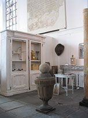
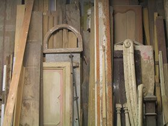
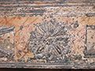

Sinds 1997 kunst, antiek, curiosa en oude bouwmaterialen. Van bestaande oude materialen maken Fred Gabor en Jolanda Muller in hun atelier unieke meubels en objecten – vaak samen met de klant.
Contact opnemen ContactVerkoop van kunst, antiek, curiosa en oude bouwmaterialen.
Restauratie van bestaande stukken.
Unieke meubels en objecten uit oude materialen, ook in samenwerking met de klant.
Bijzondere stukken uit atelier en voorraad.



Fred Gabor en Jolanda Muller wonen en werken sinds 1988 samen. Fred groeide op in een antiquairgezin; Jolanda is opgeleid aan de kunstacademie. Samen reizen, verzamelen en maken zij mooie dingen met passie.
Heeft u wensen? Bel ons; we komen graag langs voor overleg.
Abraham Blankaartsingel 39, 3813 PA Amersfoort
Tel. 06-25272337
fer.gabor@planet.nl
Op afspraak – bel of mail gerust.
Amersfoort en omgeving